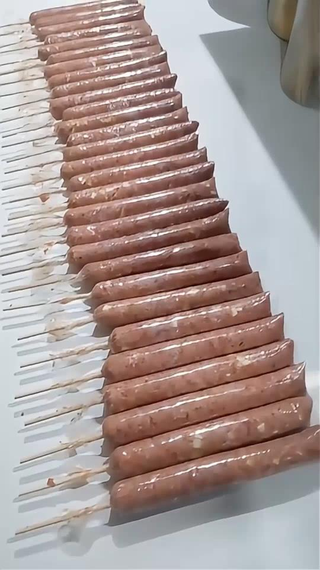
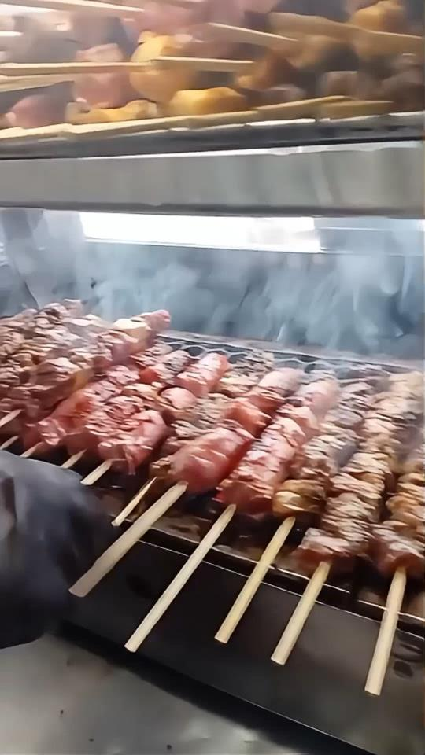

01 / NA BRASA
01 / NA BRASA01
Espetos da casa
Frango, carne, linguiça, tulipa, queijo, coração e lombo suíno, preparados na brasa.
ESCOLHA O SEUPREÇO NO LOCAL
BRASA ACESA. MESA PRONTA.
Espetos preparados com aquele sabor especial, aquele cheirinho de churrasco e uma experiência que faz você querer voltar.
Seu próximo espeto favorito está aqui!
FEITO NA BRASA, COM CAPRICHO
O melhor da brasa é escolher sem pressa. Dê uma olhada no cardápio da casa e descubra o que combina com a sua fome.
01 / NA BRASA 02 / ESPECIAIS
02 / ESPECIAIS 03 / PRA ACOMPANHAR
03 / PRA ACOMPANHAR 04 / MISTOS
04 / MISTOS BOM DE
BOM DEO SABOR QUE CONQUISTA
Tem coisas que não precisam de apresentação: o cheiro da carne na brasa, aquele primeiro pedaço suculento e a satisfação de encontrar o lugar certo para matar a fome. Na ESPETOS+QBOM, queremos que cada visita seja um motivo para voltar.
VEM CONHECER DE PERTO ↗UM GOSTINHO DO QUE VEM POR AÍ
Da brasa à mesa: um convite para chegar mais perto, sentir o cheirinho e escolher seu próximo favorito.
IMAGENS ILUSTRATIVAS · EM BREVE, FOTOS DA CASA
FEITO AQUI, NA HORA
Acompanhe de perto o capricho em cada etapa: do preparo da kafta ao espeto saindo quentinho da churrasqueira.
Olha o preparo de pertinho: kafta recheada com queijo, pronta para encontrar a brasa.

O resultado que dá vontade: espetos douradinhos, preparados aqui na ESPETOS+QBOM.

GENTE BOA PASSA POR AQUI
Um registro de quem chega para curtir a casa e dividir bons momentos com a gente.
Até o Fala Porco entrou no clima da brasa! Um encontro especial que deixou a casa ainda mais animada.
Tem uma foto especial por aqui? Conta pra gente pelo WhatsApp ↗
A BRASA TE ESPERA
Estamos esperando por você! Venha conhecer a ESPETOS+QBOM e descobrir de perto o sabor que estamos preparando.
VER COMO CHEGAR ↗ENDEREÇO
Av. Alameda Yaya, 478
HORÁRIOS
Terça a sexta
Das 16h às 20h
11 97566-0199